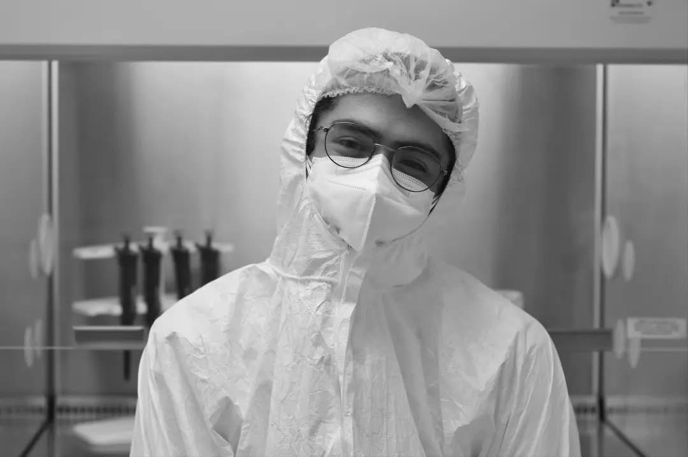

About
Population & Evolutionary Genomics · Ancient DNA · Molecular Biology · Bioinformatics

I am a PhD researcher at LIIGH, UNAM (Mexico), trained in molecular biology and bioinformatics, working at the intersection of population genomics, evolutionary biology, and ancient DNA.
My research focuses on understanding human genetic diversity through time, with particular interest in immune-related genes and their evolutionary history. I work with highly polymorphic genomic regions, including both classical and non-classical HLA genes, using ancient and historical samples.
On the experimental side, I have hands-on experience in ancient DNA laboratories, including DNA extraction, library preparation, target enrichment, and strict contamination control protocols.
In parallel, I design and apply bioinformatic pipelines for genomic data analysis, including sequence processing, variant calling, population genetic analyses, and evolutionary inference.